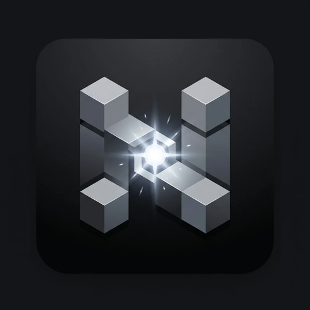

El launcher de Minecraft Java con mods, modpacks, shaders y optimización para PCs de pocos recursos.
Descargar para WindowsSe instalan solos para cada versión de Minecraft.
Explorá Modrinth y CurseForge sin salir del launcher.
Contador de FPS y ping visible mientras jugás.
Sodium, Lithium y ajustes para que corra fluido en PCs modestas.
Instala el Java que pide cada versión solo si no lo tenés.
Inicio de sesión oficial o perfil local para singleplayer y LAN.